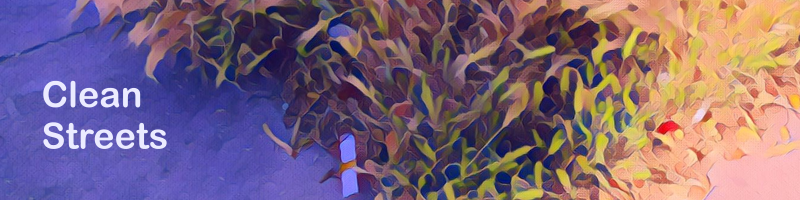

Clean Streets

Support Us
Clean Streets is a community-supported litter pickup service.
Our services include:
- Extra (Overflow) Garbage Can ($50/mo)
- weekly litter pickup ($100/mo)
- daily litter pickup ($400/mo)
[1] Neighbors may contribute towards any of the services listed above. [2] Services may be stacked. For example, 3x daily service proivdes service 3x per day. [3] Litter includes near-weightless, loose debris. [4] We will not distrub people or encampments.
We use community contributions towards:
- Paying workers
- Advertising our services
- Maintaining deployed trashcans
Our Supporters
- Support us on Patreon
- Like us on Facebook
- Follow us on Twitter
- Make a one-time donation
email me